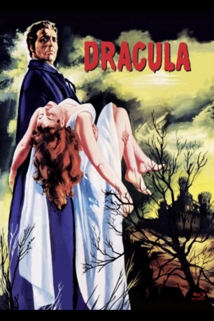
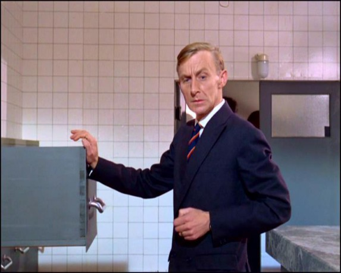

#7983 Dracula
Alternativ: Horror of Dracula (Englischer Titel)
 
 IMDB-Wertung: 7.4 / 10
IMDB-Wertung: 7.4 / 10  Metascore: 0
Metascore: 0 
Graf Dracula reist von seinem Heimatland Transsylvanien nach London. Auf der Suche nach frischem Blut zieht der zu einem Dasein als Untoter verdammte durch das bunte Nachtleben der Großstadt, wo er seine Opfer findet. Aber hier begegnet er auch Dr. Van Helsing , einem fanatischen Wissenschaftler, der dem grausamen Treiben des mörderischen Vampirs ein Ende bereiten will.
Jahr: 1958
Dauer: 82 Minuten
FSK: 16
Land: England Studio: Universal PicturesTonspuren:
Untertitel:
Auflösung: 1080p (1808x1080) Größe: 6696 MB
Genre: Horror
Regisseur: Terence Fisher
Drehbuch: Felix Breisach Medienwerkstatt
Soundtrack: James Bernard
Darsteller:
- Peter Cushing als Doctor Van Helsing
 Christopher Lee als Dracula / Count Dracula
Christopher Lee als Dracula / Count Dracula Michael Gough als Arthur Holmwood
Michael Gough als Arthur Holmwood- Melissa Stribling als Mina Holmwood
- Olga Dickie als Gerda
- Janina Faye als Tania
- George Merritt als Policeman
- George Woodbridge als Landlord
- George Benson als Official
-  Geoffrey Bayldon als Porter
- Carol Marsh als Lucy Holmwood
- John Van Eyssen als Jonathan
- Valerie Gaunt als Vampire Woman
- Barbara Archer als Inga
- Charles Lloyd Pack als Doctor Seward
 Miles Malleson als Marx - Undertaker
Miles Malleson als Marx - Undertaker- Paul Cole als Lad
- Humphrey Kent als Fat Merchant (uncredited)
- John Maxim als Inn Customer (uncredited)
- Guy Mills als Coach Driver (uncredited)
- Richard Morgan als Coach Driver's Companion (uncredited)
- John Mossman als Hearse Driver (uncredited)
- Judith Nelmes als Coach Passenger (uncredited)
- William Sherwood als Priest (uncredited)
Datei: X:\1950-1959\Dracula (1958, FSK16, 1808x1080).mkv seit 09.01.2018
Festplatte: HD 1900-1970
 Es gibt insgesamt 141 Filme in der Gruppe '1950-1959'
Es gibt insgesamt 141 Filme in der Gruppe '1950-1959'